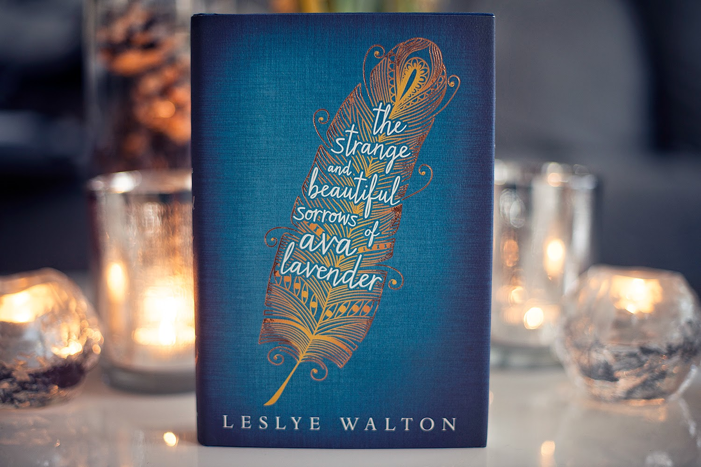

Top 10 Books of 2017
- Strange the Dreamer by Laini Taylor
- "Dream up something wild and improbable," she pleaded. "Something beautiful and full of monsters."
- Vicious by V.E. Schwab
- "I want to believe that there's more. That we could be more. Hell, we could be heroes."
- Station Eleven by Emily St. Mandel
- "Hell is the absense of the people you long for."
- Crooked Kingdom by Leigh Bardugo
- "How many times have you told me you're a monster? So be a monster. Be the thing they all fear when they close their eyes at night."
- A Tyranny of Petticoats edited by Jessica Spotswood
- "Up here it seems we only have the stars, but even they seem small in the midst of that terrifying night sky ... I suppose even monsters can be afraid of the dark."
- The Disappearances by Emily Bain Murphy
- "But really, aren't there bits of magic everywhere we look?" Dr. Cliffton continues. "We've just stopped seeing it that way."
- The Strange and Beautiful Sorrows of Ava Lavender by Leslye Walton
- "Love makes us such fools."
- Lullabies by Lange Leav
- "I still search for you in crowds, in empty fields and soaring clouds. In city lights and passing cars, on winding roads and wishing stars."
- The Book of Speculation by Erika Swyler
- "She is half a soul hungry for another... The girl, she may not know, but she will drink your soul. She cannot help it. Half a soul will kill to be whole."
- Ready Player One by Ernest Cline
- "No one in the world gets exactly what they want and that is beautiful."
Having trouble finding something to read? Here are some suggestions:
| Dystopia | Fantasy | Mystery | Poetry |
|---|---|---|---|
| The Girl With All the Gifts by M.R. Carey | The Name of the Wind by Patrick Rothfuss | Big Little Lies by Liane Moriarty | The Universe of Us by Lang Leav |
| Delirium by Lauren Oliver | Shadow and Bone by Leigh Bardugo | We Were Liars by E. Lockhart | Wild Embers by Nikita Gill |
| The Maze Runner by James Dashner | Miss Peregrine's Home for Peculiar Children by Ransom Riggs | Haunted by James Patterson | Uncaged Wallflower by Jennae Cecelia |
| Ready Player One by Ernest Cline | The Night Circus by Erin Morgenstern | The Girl on the Train by Paula Hawkins | Lullabies by Lang Leav |
Follow Me:


Review of the Week

4.5 out of 5 stars
The Strange and Beautiful Sorrows of Ava Lavender by Leslye Walton